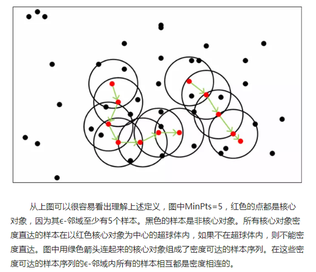
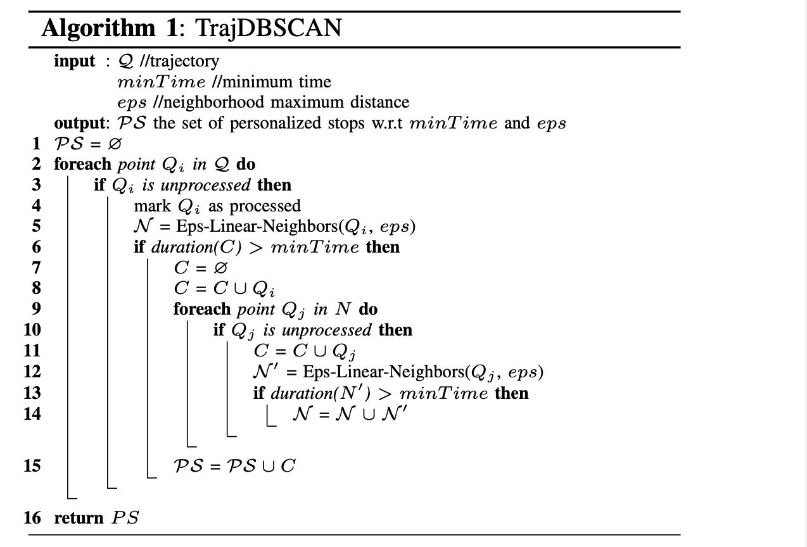
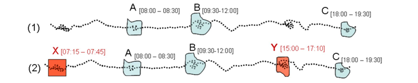
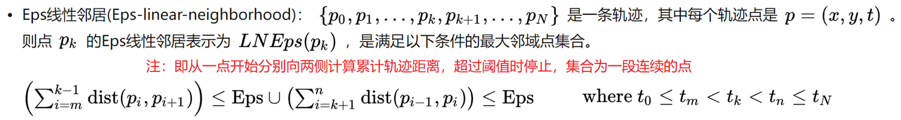

介绍一下轨迹停留点提取的相关算法
DBSCAN算法
DBSCAN（Density-Based Spatial Clustering of Applications with Noise， 具有噪声的基于密度的空间聚类方法） 算法将点集中具有足够密度的区域划分为不同的簇，簇可以为任意形状，定义为密度相连点的最大集合。
算法实现过程：
在点集中任选一点，找到距该点距离 ≤ eps 的所有点。 若其数目 < min_samples，则该点标记为噪声； 反之标记为核心样本点，并分配一个新的簇标签。 然后访问该点在距离 eps 以内的所有邻居： 若其未被分配簇，则分配新的簇标签；若其为核心样本点，则依次访问其邻居。 以此类推，直到在簇内各核心样本点的 eps 距离内无更多的核心样本点为止。 之后选取另一个未被访问的点，并重复以上相同的过程。

Traj-DBSCAN算法
Traj-DBSCAN算法出自论文：Robust and Hierarchical Stop Discovery in Sparse and Diverse Trajectories.
其在DBSCAN的基础上，将邻居的计算从空间相邻改为时间线性相邻， 而核心点计算则用停留时间代替周边点的数目。
TrajDBSCAN实现了“停留点集是子轨迹”的要求， 其子轨迹内部所有点在空间上邻近，距离中心点小于距离阈值Eps，且子轨迹持续时长高于时间阈值MinTime， 因此判断为轨迹在该处停留。

在此基础上，Traj-DBSCAN还实现了识别多条轨迹的“公共停留点”以及层次化停留点分析。
CB-SMoT算法
取自论文：A Clustering-based Approach for Discovering Interesting Places in Trajectories
先前的停留点挖掘思路通常要根据预定义的停留区来做停留检测， 而该文则提出了一种基于速度的时空聚类方法，识别轨迹中的慢速区域， 从而实现对轨迹上重要位置的挖掘。
下图中的ABC是已知的候选停留点，而XY是实际停留但未标记出的的位置。

CB-SMoT算法是DBSCAN聚类算法的改进，有很多概念类似（如核心点、密度直达、密度可达等）， 其与DBSCAN的不同之处在于对邻域与核心点的定义不同。
CB-SMoT对邻域定义如下：

核心点(Core Point)定义： 点集中的某一点，其Eps线性邻域内的轨迹持续时长高于时间阈值MinTime。 该定义的本质上是实现了速度限制条件。
算法实现方式
1、首先判断该点是否被处理过，若未处理则计算在阈值距离内的邻域点集合，并标记该点为处理过；
2、判断该邻域点形成的子轨迹的持续时间是否超过阈值，若是则该点加入核心点集；
3、对于该核心点的邻域点集中的其他未处理点重复步骤1-2， 同时扩充相应的邻域点集、核心点集，邻域点集内所有点都处理完毕；
4、将核心点集加入驻留点集中，重新回到步骤1，直到所有点都处理完毕。
- input: Track Point Series
{Track_df}, Time ThresholdMin_Time, Distance ThresholdDistance - output: Set of Stationary Points
{Track_Stops}
具体python实现代码：
import numpy as np
import pandas as pd
#使用CB-SMoT算法对轨迹的停留点进行提取
def cbSMoT_cluster(track_df: pd.DataFrame, distance: float, min_time: float):
X = track_df[['timestamp', "lng", "lat"]] # 设置聚类基于的属性
track_stops = set() # 用于保留最终的停留点集
process = np.zeros(len(X)) # 存储当前点是否被处理过
for i in range(len(X)): # 对于轨迹中的所有点
if process[i] == 0: # 如果该点未被处理：
# 计算该点的线性邻居（基于给定的距离），并标记为处理过
min_Pi, max_Pi = compute_linear_neighbours(X, i, distance)
Neighbour = set(range(min_Pi, max_Pi + 1))
process[i] = 1
# 如果停留时间超过阈值
if compute_time(X.iloc[max_Pi], X.iloc[min_Pi]) >= min_time:
cluster = {i} # 该点加入核心点集
for j in Neighbour: # 对该邻域点集中的其他未处理点重复上述步骤
if process[j] == 0: # 如果该点未被处理：
cluster.union({j}) # 扩充相应的核心点集
# 计算该点的线性邻居
min_Pj, max_Pj = compute_linear_neighbours(X, i, distance)
Neighbour_1 = set(range(min_Pj, max_Pj + 1))
# 如果停留时间超过阈值
if compute_time(X.iloc[max_Pj], X.iloc[min_Pj]) >= min_time:
# 扩充相应的邻域点集
Neighbour = Neighbour.union(Neighbour_1)
# 将核心点集加入驻留点集中
track_stops = track_stops.union(cluster)
else:
continue
# 直到所有点都处理完毕
return list(track_stops)
# 查找与路径点Ti的累计轨迹距离在D以内的近邻
def compute_linear_neighbours(track_df: pd.DataFrame, index: int, distance: float):
# 初始起终路径点
min_index, max_index = 0, len(track_df) - 1
total_dis = 0
# 计算最小路径点
for i in range(index, 0, -1):
# 计算相邻点之间的距离
dis = compute_distance(track_df.iloc[i], track_df.iloc[i-1])
total_dis += dis
# 如果小于距离阈值则继续，否则终止循环并记录最小路径点
if total_dis <= distance: continue
else:
min_index = i + 1
break
# 计算最大路径点
for i in range(index, len(track_df) - 1, 1):
# 计算相邻点之间的距离
dis = compute_distance(track_df.iloc[i], track_df.iloc[i+1])
total_dis += dis
# 如果小于距离阈值则继续，否则终止循环并记录最小路径点
if total_dis <= distance: continue
else:
max_index = i - 1
break
return min_index, max_index
# 计算两点之间欧氏距离
def compute_distance(tp1, tp2):
dis = ((tp1.lng - tp2.lng) ** 2 + (tp1.lat - tp2.lat) ** 2) ** 0.5
return dis
# 计算两点之间时间差
def compute_time(tp1, tp2):
return tp1.timestamp - tp2.timestamp
计算轨迹的平均路径点移动距离与停留时间
# 计算平均打点时间
def mean_point_time(track_df: pd.DataFrame):
length = len(track_df)
time_arr = []
for i in range(length - 1):
local_time = compute_time(track_df.iloc[i+1], track_df.iloc[i])
time_arr = np.append(time_arr, local_time)
mean_value = data_mean(time_arr)
return mean_value
# 计算平均移动距离
def mean_point_distance(track_df: pd.DataFrame):
length = len(track_df)
distance_arr = []
for i in range(length - 1):
local_distance = compute_distance(track_df.iloc[i+1], track_df.iloc[i])
distance_arr = np.append(distance_arr, local_distance)
mean_value = data_mean(distance_arr)
return mean_value
# 计算数组的三个标准差内均值
def data_mean(data_arr: np.array):
mean = np.mean(data_arr, axis=0)
std = np.std(data_arr, axis=0)
data_array_proc = [x for x in data_arr if (x > mean-3*std) & (x < mean+3*std)]
mean_proc = np.mean(data_array_proc, axis=0)
return mean_proc